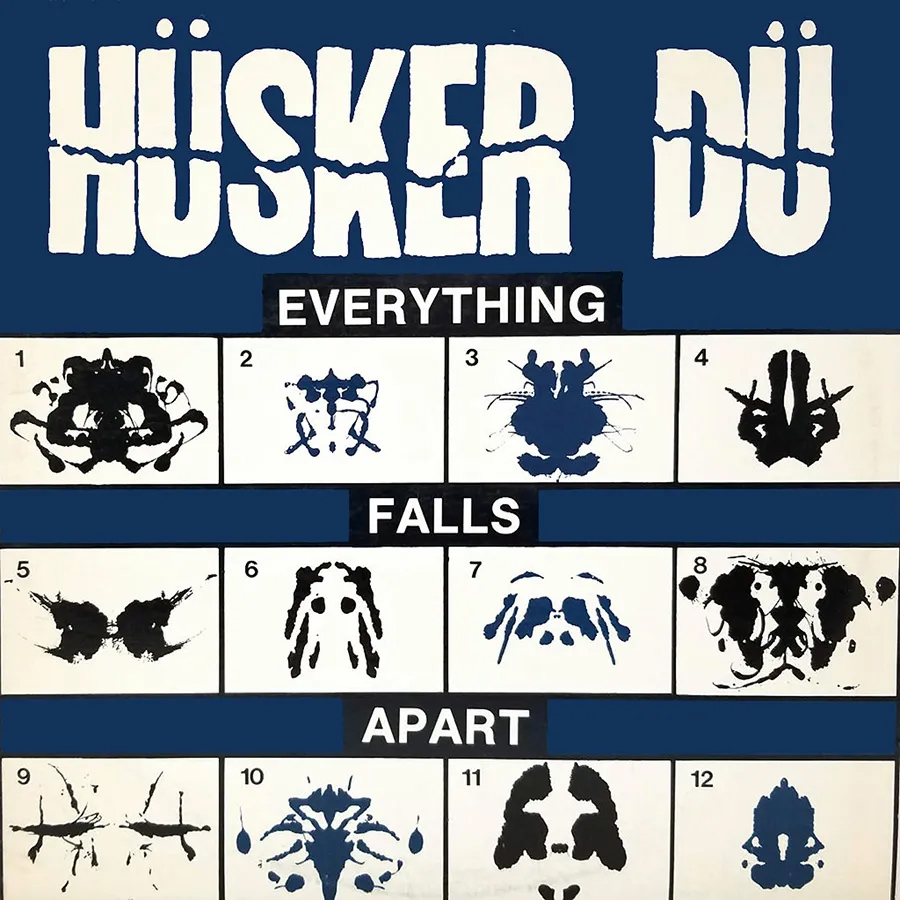
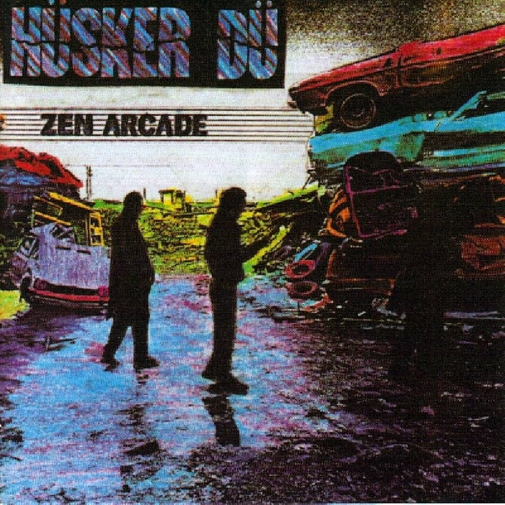
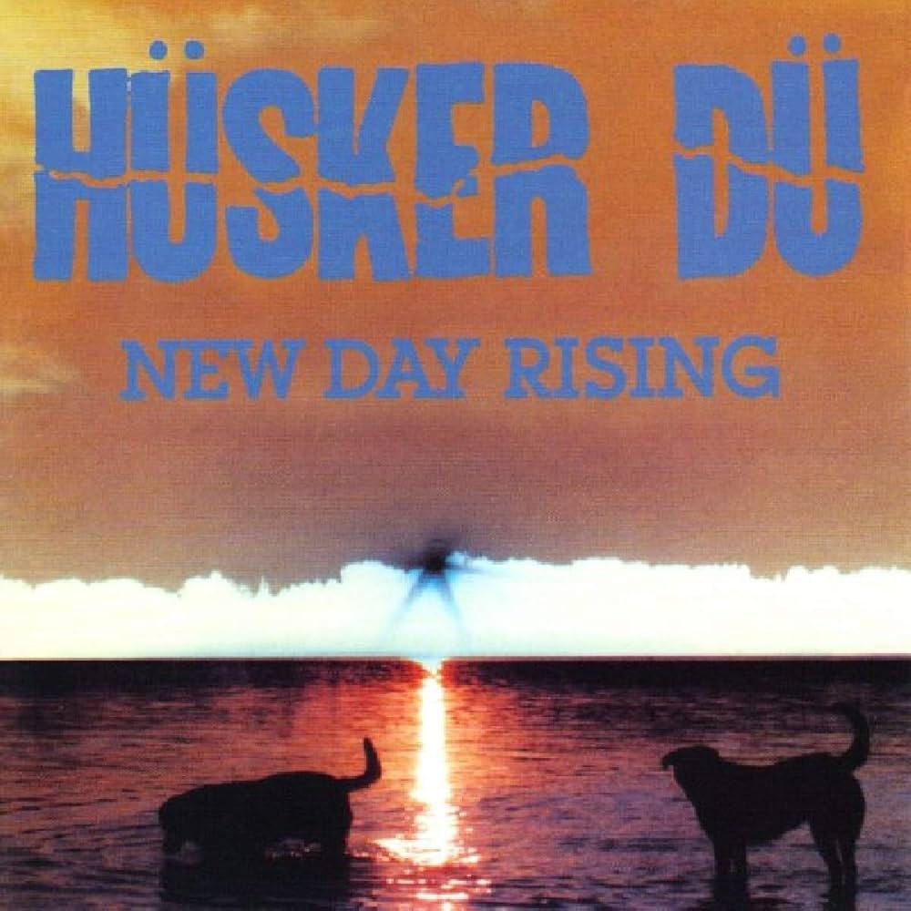
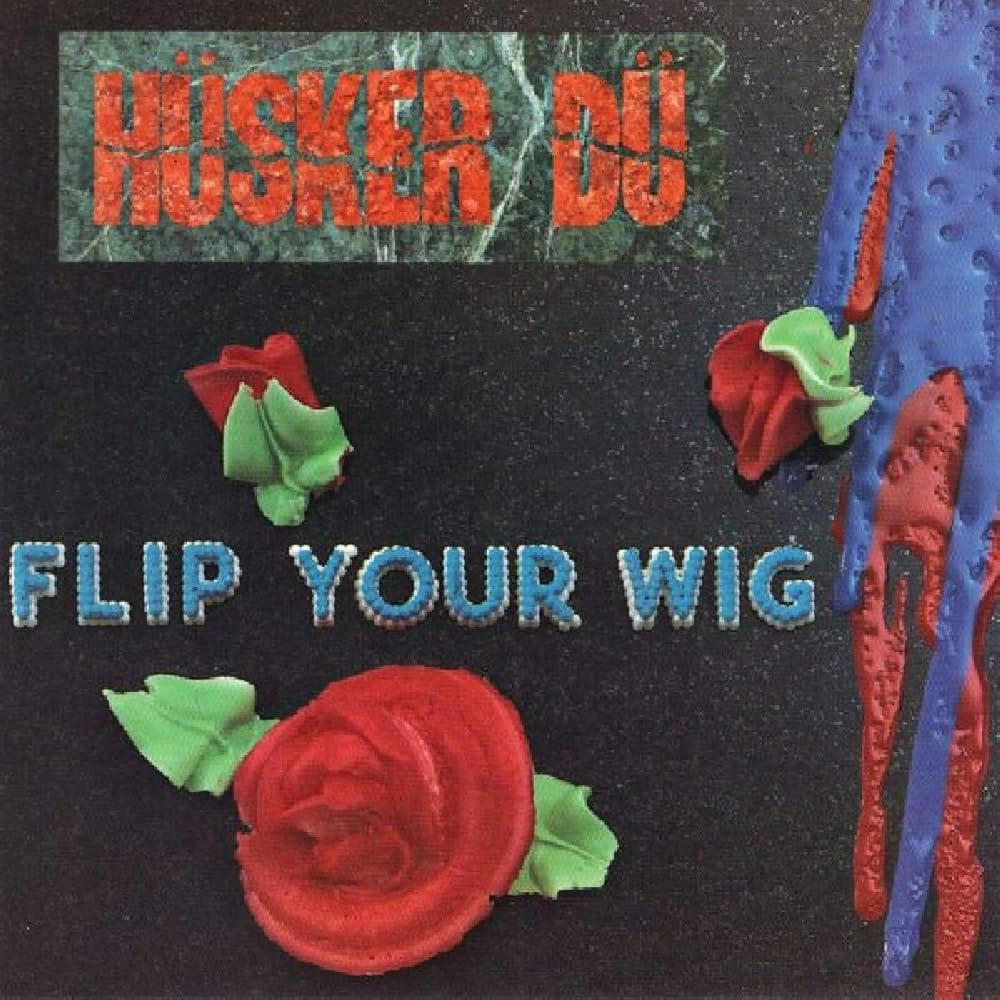
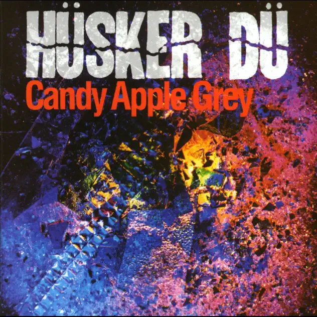
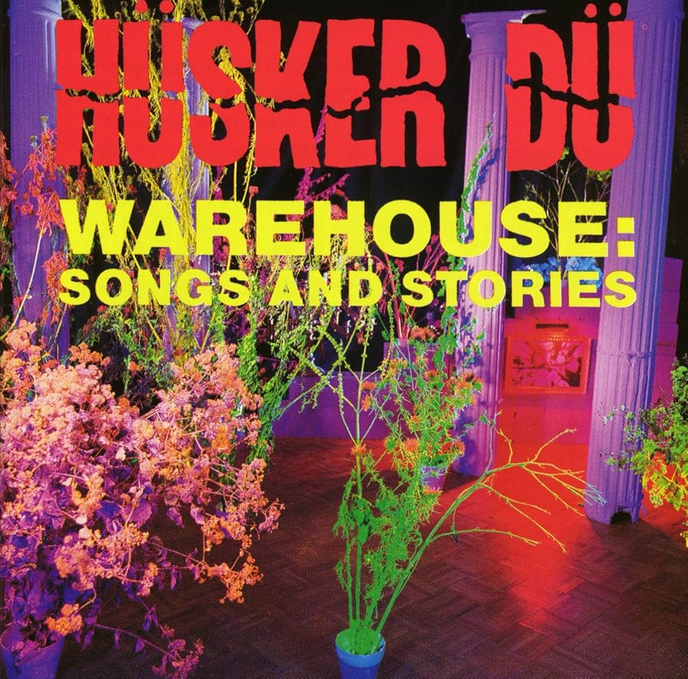

Essential Hüsker Dü Discography
From their raw debut to their final sprawling statement, Hüsker Dü's discography traces one of the most important evolutionary arcs in alternative rock history.
-
Everything Falls Apart (1982)

-
Zen Arcade (1984)

-
New Day Rising (1985)

-
Flip Your Wig (1985)

-
Candy Apple Grey (1986)

-
Warehouse: Songs and Stories (1987)

Featured Album
Zen Arcade
A groundbreaking double album that expanded the boundaries of hardcore punk with its ambitious storytelling and diverse musical styles. 'Zen Arcade is probably the closest hardcore will ever get to an opera,' David Fricke wrote in his 1984 Rolling Stone review.